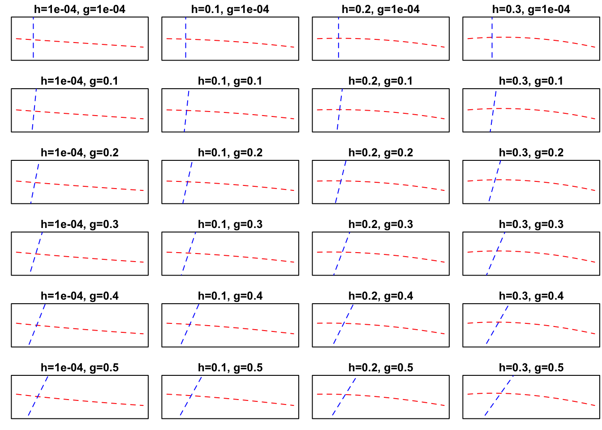
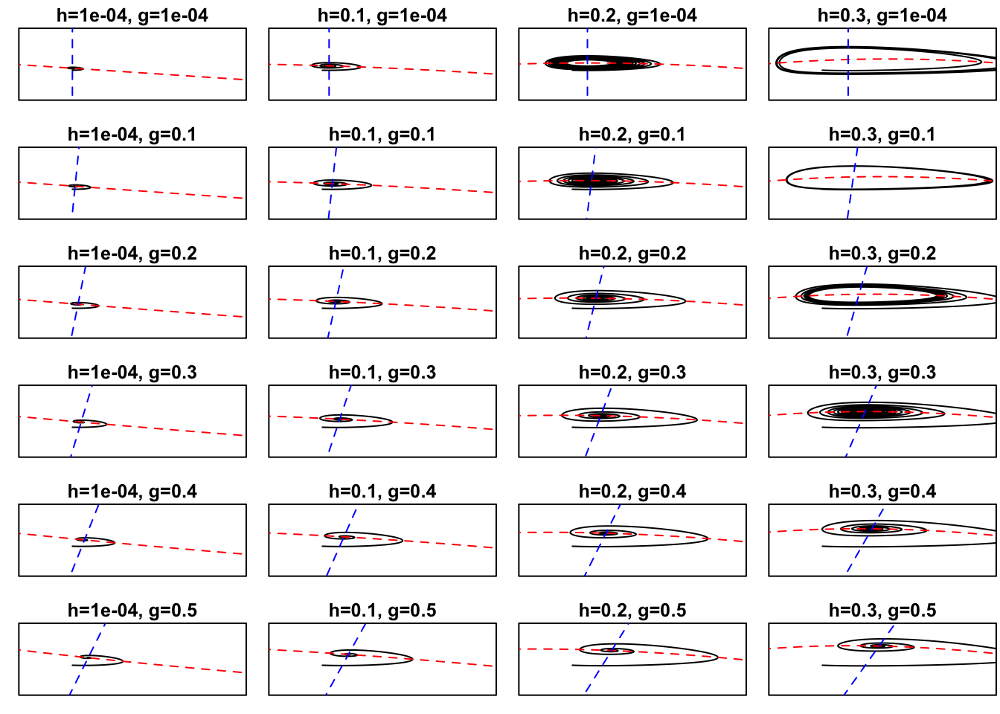
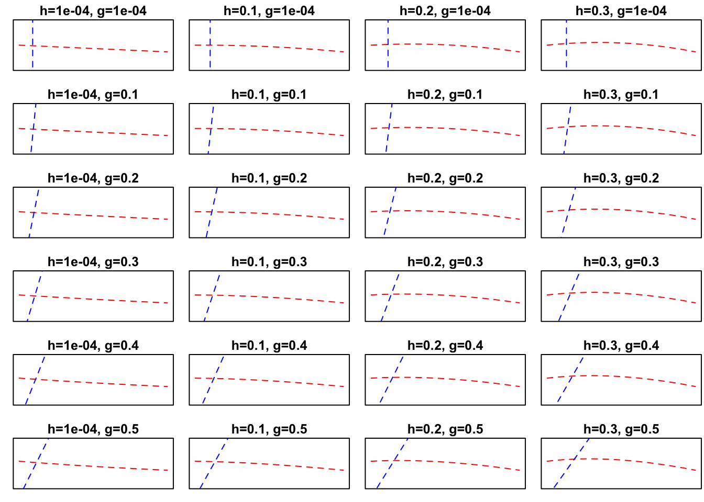
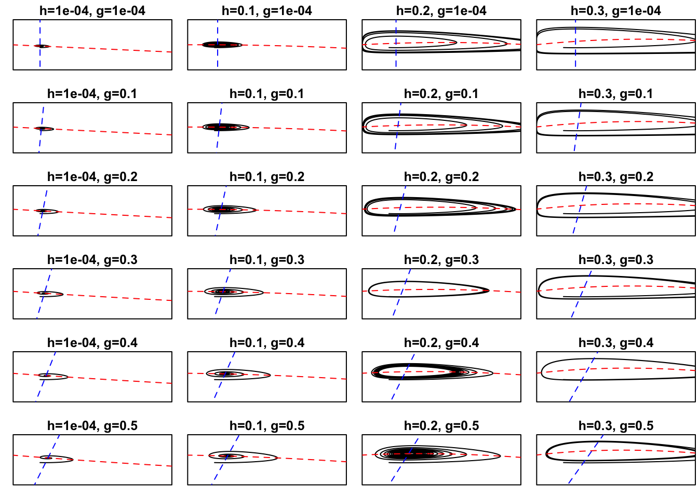

Our starting point is the Rosenzweig-MacArthur model, the last model from the previous tab. This model is based on a Holling type-II functional response. This means that the per-capita resource uptake is a saturating function of resource density, where the saturation is the result of predators spending more and more time handling prey instead of looking for new prey. We derived this functional response from first principles in Ecology D.
Let us assume that the same logic that led to the Holling type-II functional response also applies to interference competition: Each time a predator encounters another predator individual, the two predator interfere (fight) with each other for a time interval of length \(g\). Including this leads to
\[ f(N, C) = \frac{a R}{1 + a h R + a g C}. \]
This functional response is known as the Beddington-functional response. If \(g = 0\), this equation simplifies to the Holling type-II functional response. On the other hand, for \(h = 0\) we obtain a functional response based on only interference competition, resulting in a linear functional response with slope \(a / (1 + a g C)\). Hence, the rate of food uptake decreases with increasing consumer density \(C\). If \(h \neq 0 \neq g\), then the rate of food uptake is saturating in \(R\), and it saturates faster with increasing \(C\). Let us explore this function by plotting if for different predator densities \(C\).
Using this functional response, the predator prey system can be written as
\[ \begin{align} \frac{\mathrm{d}R}{\mathrm{d}t}&=Rr\bigg(1-\frac{R}{K}\bigg) - \frac{a R C}{1 + a h R + a g C}\\ \frac{\mathrm{d}C}{\mathrm{d}t}&=e \frac{a R C}{1 + a h R + a g C} - dC. \end{align} \]
To analyze this model, it is useful to first obtain the equations for the prey and predator isoclines, just as we did for the previous models. For the model with interference competition, these equations are a abit cumbersome and I give them here:
\[ \begin{align} C & = \frac{(1 + a h R)(K - R)r}{a K - a g (K - R) r} \hspace{1 cm} \text{prey isocline}\\ C & = \frac{(e - d h)}{d g} R - \frac{1}{a g} \hspace{1.55 cm} \text{predator isocline} \end{align} \]
Let us start by looking at the equations for the two isoclines and how they change in response to \(h\), \(g\) and \(K\).
The first thing to notice is that the predator isocline is a linear function in \(R\) with intercept \(-1 / (ag)\) and slope \((e - d h) / (d g)\). Thus, this isocline is independent of \(K\) and increasing \(h\) decreases the slope (makes it more tilted to the right). Increasing \(g\) moves the intercept closer to \(0\) decreases the slope (makes it more tilted to the right). Note that \(e -d h > 0\) is a prerequisite for the existence of an intersection point at which the densities of both species are positive (if \(e -d h < 0\), the isocline would never be in the positive quadrant).
Next, let us look at the prey isocline. The effect of \(K\) on this isocline seems complicated. On the other hand, both increasing \(h\) and increasing \(g\) increase this isocline.
Let us illustrate this pattern by plotting the phase plane with the isoclines.
# parameters
r <- 0.5
e <- 0.05
a <- 0.05
d <- 0.05
k <- 150
# Resource isocline
R <- 0:k
Riso <- function(R, r, k, a, h, g, e){
(((1 + a * h * R) * (k - R) * r) / (a * k - a * g * (k - R) * r))
}
# range of h- and g-values
h <- c(0.0001, 0.1, 0.2, 0.3)
g <- c(0.0001, 0.1, 0.2, 0.3, 0.4, 0.5)
# parameter sweep resulting in plots for all parameter combinations
par(mfrow=c(length(g), length(h)), mar = c(1, 1, 1.5, 0.2))
for (i in seq_along(g)) {
for (j in seq_along(h)) {
curve(Riso(x, r, k, a, h[j], g[i], e), from = 0, to = k, type = "l", lty =2, col = "red", ylim = c(0, 20),
xlab = "", ylab = "", main = paste0("h=", h[j], ", g=", g[i]), xaxt = "n", yaxt = "n", asp = 1)
abline(a = -1/(a*g[i]), b = (e - d * h[j]) / (d * g[i]), lty = 2, col = "blue")
}
}
We can ask R to numerically calculate the point where the two isoclines intersect. For this, I use some code the AI produced for me.
Req <- matrix(NA, nrow = length(g), ncol = length(h), dimnames = list(paste0("g=", g), paste0("h=", h)))
Ceq <- Req
for(i in seq_along(g)) {
for(j in seq_along(h)) {
f <- function(R){
Riso(R, r, k, a, h[j], g[i], e) -
(-1/(a * g[i]) +
((e - d * h[j]) / (d * g[i])) * R)
}
xgrid <- seq(0, k, length.out = 5000)
ygrid <- sapply(xgrid, f)
idx <- which(
ygrid[-1] * ygrid[-length(ygrid)] < 0
)
if(length(idx) > 0) {
Req[i, j] <- uniroot( # use uniroot to solve for the intersection point
f,
lower = xgrid[idx[1]],
upper = xgrid[idx[1] + 1]
)$root
Ceq[i, j] <- Riso(
Req[i, j],
r, k, a,
h[j], g[i], e
)
}
}
}
round(Req, 3) # matrix of resource equilibrium values## h=1e-04 h=0.1 h=0.2 h=0.3
## g=1e-04 20.003 22.223 25.001 28.573
## g=0.1 20.902 23.316 26.358 30.298
## g=0.2 21.870 24.500 27.834 32.183
## g=0.3 22.914 25.780 29.436 34.233
## g=0.4 24.040 27.166 31.174 36.456
## g=0.5 25.253 28.663 33.053 38.853round(Ceq, 3) # matrix of consumer equilibrium values## h=1e-04 h=0.1 h=0.2 h=0.3
## g=1e-04 8.668 9.465 10.417 11.565
## g=0.1 8.995 9.846 10.863 12.089
## g=0.2 9.341 10.249 11.334 12.639
## g=0.3 9.707 10.675 11.830 13.210
## g=0.4 10.094 11.123 12.348 13.798
## g=0.5 10.501 11.593 12.885 14.395What would we expect? I would expect that the equilibrium resource density increases with higher \(h\) and \(g\), simply because both will make the predator less efficient at consuming prey. The first table clearly confirms this! Thus, increasing interference competition makes predators less harmful for the prey!
For the predator, I would have expected that increasing \(h\) and \(g\) would decrease equilibrium predator density. Interestingly, the second table shows that this is NOT the case! How can we understand this? In my opinion, the answer must be that these changes must make the resource more productive. Indeed, note that the carrying capacity of the resource is currently \(K=150\). Hence, the resource growth rate is maximal at \(150 / 2 = 75\). The above table show that increasing \(h\) and \(g\) moves the predator equilibrium density closer to \(75\). The resulting increased productivity benefits the consumer population and more than offsets the decreased efficiency due to higher \(h\) and \(g\). This illustrates the value of mathematical modelling as it unveils phenomena that at first seem counterintuitive.
But are these equilibria always stable? Let us add the population dynamics to the phase plane plots.
# defining the ODEs
predprey.interference <- function(t, y, p) {
R <- y[1]
C <- y[2]
with(as.list(p), {
dR.dt <- r * R * (1 - R / k) - a * C * R / (1 + a * h * R + a * g * C)
dC.dt <- (e * a * C * R) / (1 + a * h * R + a * g * C) - d * C
list(c(dR.dt, dC.dt))
})
}
# initial population densities
R0 <- 20
C0 <- 8
MaxTime <- 1000
Time <- seq(0, MaxTime, by = 0.1)
# loading deSolve
library(deSolve)
# creating the plots
par(mfrow=c(6, 4), mar = c(1, 1, 1.5, 0.2))
for (i in 1:6) {
for (j in 1:4) {
params <- c(r = r, k = k, a = a, h = h[j], g = g[i], e = e, d = d)
interference.out <- ode(c(R0, C0), Time, predprey.interference, params)
plot(interference.out[, 2], interference.out[, 3], type = "l", lty = 1, col = 1, xlim = c(5, k/2), ylim = c(0, 20), ylab = "", xlab = "", main = paste0("h=", h[j], ", g=", g[i]), xaxt = "n", yaxt = "n", asp = 1)
curve(Riso(x, r, k, a, h[j], g[i], e), from = 0, to = k, type = "l", lty =2, col = "red", add = TRUE)
abline(a = -1/(a*g[i]), b = (e - d * h[j]) / (d * g[i]), lty = 2, col = "blue")
}
}
Note, that in this plot I restricted x-axes from \(5\) to \(k/2 = 75\), simply to zoom-in around the region around the equilibrium point. We can make two observations. First, increasing \(h\) is destabilizing the equilibrium. This is in agreement with what we know about the Rosenzweig-MacArthur model (paradox of enrichment). Second, increasing \(g\) has the opposite effect, namely stabilizing the equilibrium. This makes intuitive sense: increasing \(g\) decreases the slope of the predator isocline, sloping it more to the right. A sufficiently large increase in \(g\) will cause the predator isocline to the right of the maximum of the prey isocline, which we know stabilized the equilibrium.
Taken together, we can draw the following main conclusions.
Interference competition increases the equilibrium abundance of prey as predators become less harmful.
Interference competition reduces the possibility for limit cycles and the population dynamics are more likely to reach fixed equilibrium densities.
At lease for the parameter combinations considered above, increasing interference competition also increases predator equilibrium density. This observation is at first surprising, but can be understood based on the fact that the prey population is most productive at half the carrying capacity.

## h=1e-04 h=0.1 h=0.2 h=0.3
## g=1e-04 20.003 22.223 25.001 28.573
## g=0.1 20.950 23.383 26.455 30.445
## g=0.2 21.981 24.655 28.060 32.532
## g=0.3 23.104 26.050 29.835 34.857
## g=0.4 24.330 27.583 31.801 37.450
## g=0.5 25.672 29.271 33.978 40.336## h=1e-04 h=0.1 h=0.2 h=0.3
## g=1e-04 9.092 9.989 11.080 12.431
## g=0.1 9.477 10.449 11.637 13.116
## g=0.2 9.892 10.946 12.241 13.861
## g=0.3 10.339 11.483 12.895 14.667
## g=0.4 10.820 12.062 13.602 15.537
## g=0.5 11.338 12.688 14.365 16.470
We can conclude that increasing \(K\) increases the range of \(h\)- and \(g\)-values where we can observe a predator-prey oscillations along a stable limit cycle, but that otherwise all observations made for \(K = 150\) still hold.